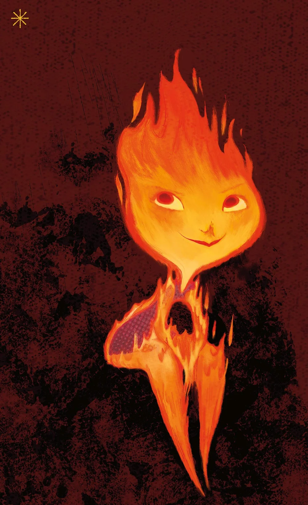
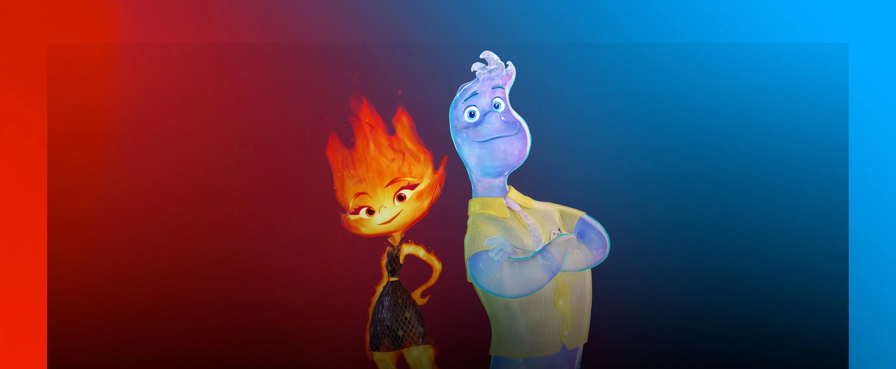
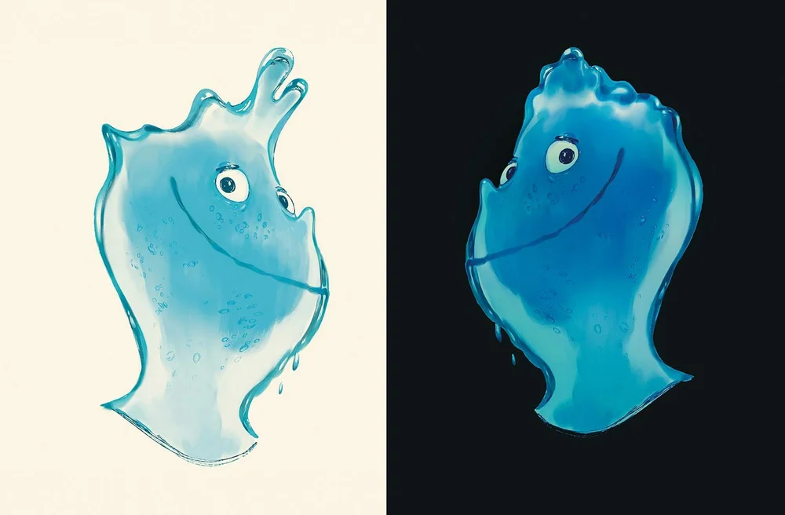

Эмбер
Яркая и решительная девушка огня. Любит семью и постепенно учится выбирать собственный путь.

В городе стихий рядом живут огонь, вода, земля и воздух. Вспыльчивая Эмбер привыкла помогать семье и следовать её ожиданиям. Знакомство с открытым и чувствительным Уэйдом заставляет её по-новому взглянуть на будущее: и на себя.

Яркая и решительная девушка огня. Любит семью и постепенно учится выбирать собственный путь.

Парень воды с открытым сердцем. Не прячет эмоций и замечает хорошее в окружающих.
Чужой мир становится ближе, когда мы готовы услышать друг друга.
Выберите один ответ и проверьте себя.